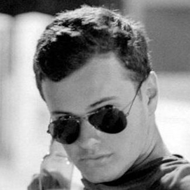

|  |
|
(Lisbon, Portugal / 2016-present)
BSC in Computer Science and Business Management
(Daegu, South Korea / March - June 2019)
Semester Abroad in South Korea Focused in Computer Science
(Lisbon, Portugal / 2005 - 2015)
English Level: B2 Independent User
(Lisbon, Portugal / October 2014 - July 2017)
Worked for the Family Contruction Business.
| Programing | Bash | Java | Excel | |
| Software | OS X | Linux | Windows | |
| Languages | Portuguese (mother tongue) | English (independent) | French (basic) | Spanish (basic) |